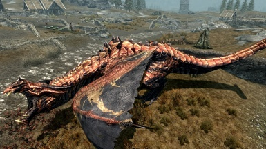
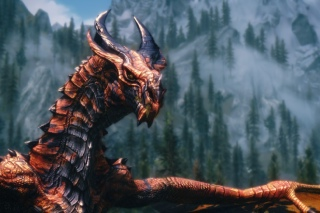
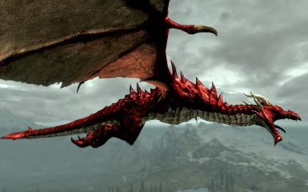

Классификация драконов Скайрима |
Обычный дракон |

Обычный дракон — самая распространённая разновидность драконов, а также наиболее слабая. Бывает трёх подвидов: белый, бронзовый и коричневый. Внешне эти подвиды довольно сильно отличаются, однако по своим возможностям и уровню угрозы практически идентичны. Наиболее типичные коричневые драконы выглядят, как крупные крылатые ящеры, покрытые серо-коричневатой чешуёй. Пластины чешуи на нижней части тела дракона имеют значительно более светлый окрас. Спина от основания черепа, до начала хвоста защищена несколькими рядами острых роговых шипов внушительного размера, наиболее крупные из которых сосредоточены в районе лопаток чудовища. На голове расположены четыре рога: два крупных и два помельче. |
Кровавый дракон |

Кровавый дракон — одна из весьма распространённых разновидностей драконов, представители которой не очень сильны, превосходя своих обычных собратьев, в основном за счёт силы Голоса. Имеют некоторые особенности внешнего вида, отличающие их от сородичей. Кожный покров отличается специфическим зеленоватым оттенком, а чешуя отливает изумрудным металлическим блеском. Шипы на спине соединены перепонками, образуя подобие плавника. На голове вместо двух целых пять небольших рогов, также соединённых перепонками, образуют что-то вроде пластины, защищающей заднюю часть черепа. Хвост оканчивается широким плоским плавником, расположенным параллельно плоскости земли. |
Морозный дракон |

Морозный дракон — один из видов драконов. Окрас — блестящий голубовато-белый, однако массивные шипы на его хребте практически чёрные. Морозный дракон имеет блестящую белую кожу с массивными чёрными шипами, выступающими из позвоночника. Данный вид драконов хорошо владеет ледяным дыханием с большим уроном и эффектом замедления. Как правило, морозные драконы предпочитают места с очень суровым морозным климатом. Морозный дракон — единственный из всех видов драконов, который всегда использует одну стихию — холод. |
Старейший дракон |
|
 Старейший дракон обладает крепкой бронзовой кожей и мастерски использует Yol (огонь) или Fo (мороз) для смертельного дыхания. Этот вид имеет очень большой запас здоровья и считается одним из самых сильных. По своей силе они уступают только Древним драконам. Бывают двух подвидов: «Огненный» и «Морозный».По своей окраске напоминают Древних драконов, однако у этого вида отсутствуют черные пятна. |
Древний дракон |
|
 Особенностью древних драконов является красноватая кожа со странными чёрными отметинами и шипами. По своему виду напоминают Старейших драконов, но вместо золотисто-медного цвета они имеют бронзовый цвет. Бывают двух подтипов: «Огненный» и «Морозный». Одни из самых сильных драконов, которые используют Yol (огонь) или Fo (мороз) при дыхании. |
Красный дракон |
|
 Красный Дракон имеет кроваво-красный оттенок кожи с чёрными отметинами и шипами. Одни из самых сильных драконов, наряду с легендарными. Красные драконы мастерски используют Yol (огонь) и отлично летают.Красные драконы вместе со своими чёрными собратьями в Первой эре, вероятно, мигрировали с Акавира на Тамриэль, чтобы спастись от войны между цаэски и Ка По'Тун, в которой практически все драконы Акавира были истреблены. |
Благородный дракон |

Их отличительной особенностью является умение передвигаться под водой. У них характерное строение тела, широкий, напоминающий плавник, хвост и гипертрофированные суставы крыльев. Цвет чешуи — коричневатый. Используют крики: Yol (огонь), Fo (мороз) или «Высасывание жизни». В отличие от других драконов, у этого шея и форма черепа напоминают змеиные, что делает его уникальным и довольно устрашающим. Хвост и шея плоские, на них по бокам расположены большие шипы с перепонкой между ними, вероятно играющие роль плавников. |
Легендарный дракон |
|
Легендарные драконы являются одними из самых сильных драконов, оправдывая своё название. Имеют серо-розовый окрас чешуи и гипертрофированные суставы крыльев. Используют крики: Yol (огонь), Fo (мороз), или «Высасывание жизни». |
Змеевидный дракон |

Вид драконов, встречающийся только на острове Солстхейм и имеющий свой, уникальный внешний вид: бледно-синюю окраску, длинный череп, форма которого напоминает змеиный (что оправдывает их название), гладкую кожу и огромные нижние челюсти, дополняемые особой формой гребня, идущего вдоль спины. Также стоит отметить прорисовку крыльев и чешую на их перепонках. Напоминает благородного дракона. Змеевидные драконы — самые большие из драконов, которые когда-либо встречались в Тамриэле, однако, в остальном они уступают красным и легендарным. |